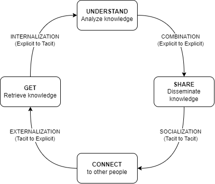
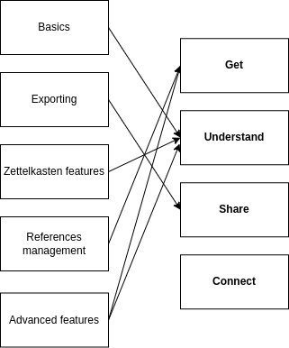
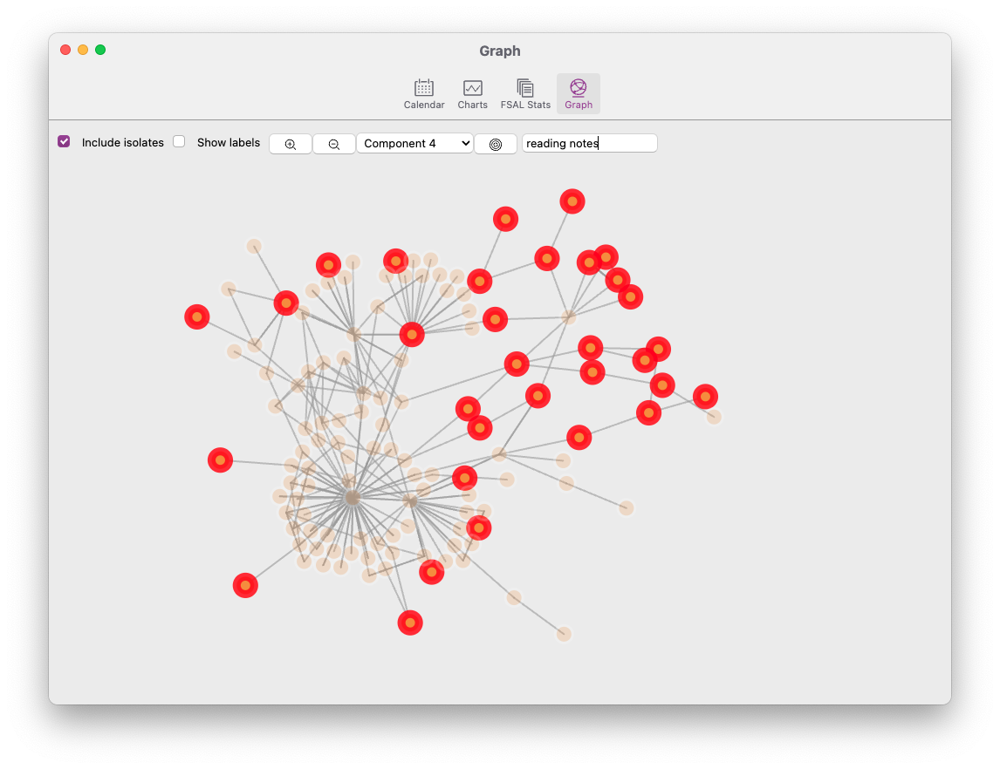

The power of plain text
a.k.a. a gentle introduction to personal knowledge management using Zettlr
Why?
Raison d’être of Personal Knowledge Management (PKM)
- We live in an information society. We are overloaded with information of diverse nature and quality.
- There is more than information overload: tools overload, social overload and reference overload.
- Most individuals are passive against these concerns. However, the digital medium has its very own characteristics we need to embrace to develop a personal.
What is PKM?
PKM is the field that precisely studies that issue: how, as individuals, can we thrive in the informational age? How can we make the most out of information technologies without feeling overwhelmed?
Key skills in PKM
- Management
- Lifelong learning
- Communication and interpersonal skills
- Technological fluency
- Forecasting and anticipating
Key skills in PKM (cont’d)
- Use frameworks, models and conceptual tools to build upon your current KM practices.
- Implement PKM strategies using digital technologies.
- PKM practices are ultimately personal and evolving constructs.
- Reflect about the process, iterate, exchange with others
Some concrete insights
- Find an equilibrium between content consumption and content creation
- Move from note-taking to note-making: think about your notes, not just their content
- Showcase your learning: learn in public, build a digital garden
- View digital tools as opportunities to design new workflows
The GUSC model
We will use the GUSC model. It can be seen as a concretization of the SECI model.

→ A simple yet powerful model. We need to associate concrete actions to each phase.
The GUSC model in more details
- Get: gather information from different sources
- Understand: interpret, combine information into a (personal) whole
- Share: produce artifacts to make the learning process visible
- Connect: collaborate and exchange with others
A plethora of tools
Notion, Roam, Tana, Obsidian, Logseq, AnyType, Affine, TiddlyWiki, Zettlr…
- Local vs Web-aware vs Web-based
- FOSS vs Freeware vs Paid
- Specific ↔︎ Extensible ↔︎ Malleable
- User-friendly?
→ We will use Zettlr
Advantages of plain text editing
- Lightweight: you can work with just a simple text editor. You can store your files anywhere.
- Easily readable and writable: a whole range of apps work with plain text. It is also easy to manipulate programmatically.
- No lock-in: you can use your text files in different apps for different purposes. You can switch to a new app that better fits your needs seamlessly.
- Teaches you about computing and the hacker mindset in a hands-on way.
How?
Goal
→ We will see how Zettlr can help us implement strategies for the first 3 steps of the GUSC model (Get, Understand, Share).
Zettlr is:
- Free and Open-Source
- Web-aware
- Supported by a community (
Discord,Reddit) - Specific but plays nicely with other tools (bibliography, export)
GUSC in Zettlr

Install Zettlr
- Simply go to the official website: zettlr.com/download
- Install and open it.
- If you write academic articles, you will need
LaTeXat some point. Simply useMikTeX(this is not the point today).
Markdown syntax
# Section heading## Subsection heading…This is
_emphasized_and this is**strong**This is a
- List itemThis is a
1. Numberred itemThis is a
[link](https://zettlr.com)This is an
YAML: metadata and options
Basics and Exporting
- Create a new file
- Fill it up with some headings and content.
- You have some shortcut icons (e.g. links and images)
- Left pane: files explorer
- Right pane: outline and more
- Export button: select one of the available formats (except
LaTeX)
References: Zotero + Zettlr
- Install
Zotero. You will manage all your references from here. - Install the
BetterBibTeXplugin forZotero - Export your
Zoterolibrary - Open it in
Zettlr - Type in
@and select one of your refs.
Example [@resnickLifelongKindergartenCultivating2017] and others emphasize the need to develop creativity in computing education.
[@morPracticalDesignPatterns2014] have developed design patterns for implementing technology-enhanced pedagogy.
References
Zettelkasten in Zettlr
- Use #tags.
- Link to other files, such as in [[about_tags]].
- Give unique IDs to files such as [[20231216180452]] Another file
Graph view:

Extending export capabilities
- Change how things look
- Add new export possibilities thanks to
Pandoc
We will use the Assets dialog: File > Preferences > Manage assets
Challenge 1: use custom CSS to style HTML output
- The given file is
custom.css. - Select the
HTMLprofile. On line 46, addcustom.cssbetween the brackets. - You can also add
css: custom.cssto the YAML on each file you want to export withcustom.css.
Extending export capabilities (cont’d)
Challenge 2: enable export to PowerPoint presentations
- By default,
Zettlroffers no possibility to export to.pptx(PowerPoint). However,pandoccan do it. - Create a new profile with
reader: markdownandwriter: pptx
Challenge 3: modify how things look in docx, pptx, odt
- You can specify a template by adding
reference_doc: template.pptxto the corresponding profile. - We provide
custom.docx,custom.odtandcustom.pptx - Modify the slide masters in the provided template
- For
docx/odt, modify the styles.